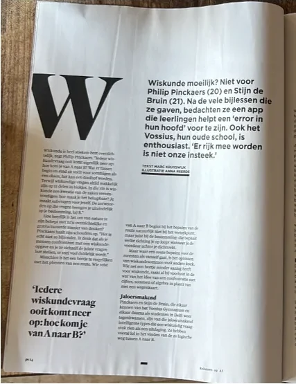

Het Parool
Het Parool



Leerlingen van het Vossius Gymnasium gebruiken WisWiz om toetsen voor te bereiden.

Bijlesleerlingen van Stichting Wijs Bijles krijgen WisWiz, ook voor hulp buiten de bijles.

“WisWiz is een krachtige tool waarin verschillende kwaliteiten van kunstmatige intelligentie gecombineerd worden voor persoonlijke leerervaring.”